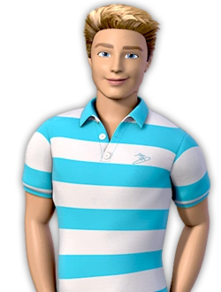

Sobre o Ken
"Sou apenas o Ken..."
Desde seu lançamento em 1961 pela Mattel, Ken se tornou um dos personagens mais icônicos do mundo dos brinquedos. Criado como o companheiro da Barbie, Ken rapidamente conquistou seu próprio espaço, evoluindo ao longo das décadas para refletir diferentes estilos, personalidades e papéis dentro da cultura pop. Com seu visual sempre atualizado e sua versatilidade, ele se tornou um símbolo de moda, atitude e autoexpressão.
Embora muitas vezes visto como o namorado da Barbie, Ken tem sua própria identidade e trajetória. Ele já assumiu diversas profissões, como médico, atleta, bombeiro e até mesmo astronauta, mostrando que também pode ser um modelo de inspiração e representação. Sua evolução acompanha as mudanças da sociedade, com novas versões que apresentam diferentes tons de pele, tipos de cabelo e estilos de corpo, ampliando a inclusão e a diversidade dentro do universo dos brinquedos.
Além de seu impacto no mundo dos brinquedos, Ken também influenciou a cultura pop, aparecendo em filmes, séries, campanhas de moda e sendo reinventado em diferentes mídias. Sua presença continua forte, especialmente com as recentes produções cinematográficas que trouxeram novas camadas ao seu personagem, explorando sua personalidade de forma mais complexa e divertida.
Ken é mais do que um acessório no mundo da Barbie; ele é uma representação da evolução masculina nos brinquedos, mostrando que a criatividade e a autoexpressão são elementos essenciais para todas as pessoas. Seu legado continua a crescer, inspirando novas gerações a explorarem sua individualidade e seu estilo único.

